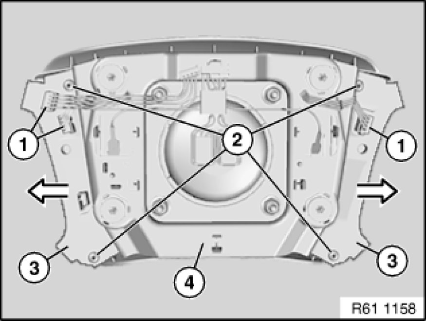

Replacing Switch on Impact Cushion For Left and Right Airbags
61 31 225 - Replacing switch on impact cushion for left and right airbags

Necessary preliminary tasks:
- Remove airbag unit Removing and Installing/Replacing Airbag Unit

Disconnect plug connections (1).
Loosen screws (2).
Feed out switch on impact cushion for airbag (3) in each case in direction of arrow from airbag unit (4) and remove.